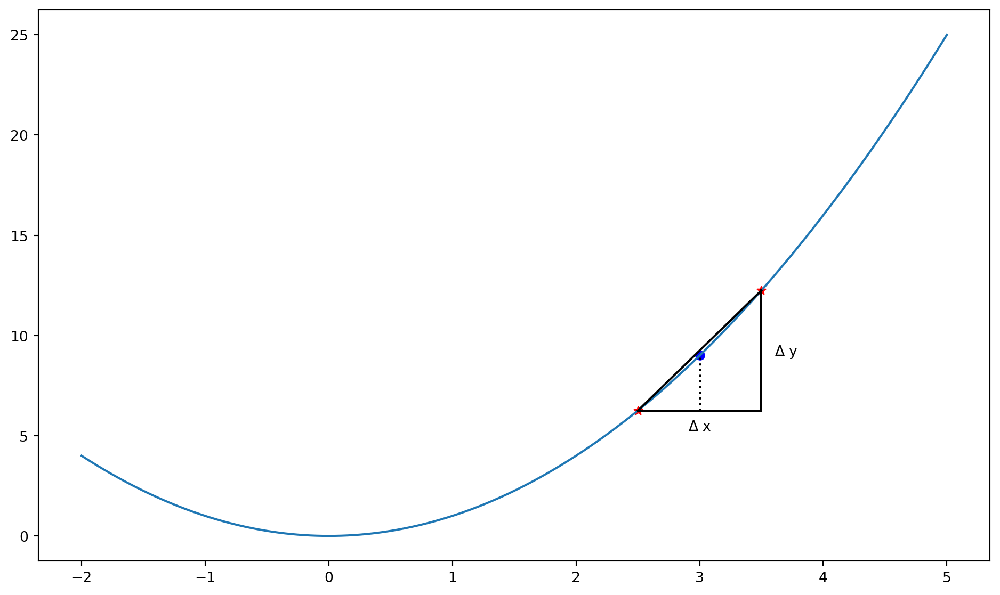

MATH60207 - Lecture 3
Plan for today
- Overview of financial databases at HEC
- Empiricist workflow
- Intro to panda
- Workflow example using pandas
- Lambda functions
- Assignment 3: pandas!
Financial databases at HEC Montréal
Library website:
- Finance guide (in French): https://libguides.hec.ca/Finance
- Full list: https://www.hec.ca/en/library/databases/index.html
Many databases are available through the WRDS portal
- As graduate students, you can get an account through the library.
Market & company data
- Bloomberg Workstations
- CHASS CFMRC/TSX: Daily stock data, Canadian market
- CRSP (through WRDS): Daily stock data + mutual funds, US market
- TAQ (through WRDS): Intraday stock data, US market
- TRACE (through WRDS): Intraday bond data, US market
- Compustat - Capital IQ (through WRDS): Corporate info, executives, indices, etc…
- Trucost: Carbon footprint of firms
Other sources of data
News
- Factiva
- Nexis Uni
Publicly available data:
- Bank of Canada, US Federal Reserve, etc.
- Industry groups
- Government agencies
The empiricist’s workflow (1)
The first step should always be to identify the research question and hypotheses, then design the tests based on available data.
Data availability is often a binding constraint to research. We will often use data from standard sources (i.e. WRDS), but it can also come from other sources (proprietary data, web, etc.)
The empiricist’s workflow (2)
Before doing any analysis, we have to get to know the data:
- To spot potential data errors.
- To figure out the format of the data.
After loading the data, the first thing should be looking at the data:
- Raw data (small sample)
- Plot figures
- Compute descriptive statistics
The empiricist’s workflow (3)
The next step is usually data cleaning, or data wrangling.
- Often the most time-consuming part of an empirical project.
- Consists of converting to proper format, aligning data, merging datasets, etc.
- The output is a dataset that is ready for analysis.
- pandas is a great tool for data cleaning.
Once the dataset is ready, we can proceed with the analysis and report the results using tables and figures.
pandas
- pandas is a fast, powerful, flexible and easy to use open source data analysis and manipulation tool, built on top of the Python programming language.
- Originally developed by Wes McKinney while working at AQR Capital Management.

pandas Highlights
- A fast and efficient DataFrame object for data manipulation with integrated indexing;
- Tools for reading and writing data in many format;
- Flexible reshaping and pivoting of data sets;
- Aggregating or transforming data with a powerful group by engine;
- High-performance merging and joining of data sets;
- Time series-functionality;
pandas 2.0 Highlights
- Main change: Arrow engine (in addition to numpy engine)
- Support for nullable integer data type
- Better integration with Apache Arrow ecosystem:
- Polars: Alternative to pandas, written in Rust.
- DuckDB: In-memory SQL database written in C++.
- parquet file format: Columnar storage format. Think CSV, but faster and smaller.
- Caution: relatively recent version (2023), not all other libraries are compatible with the new features yet.


Demo time!
Data Wrangler: VS Code integration
- Data Wrangler is a VS Code extension that provides a UI for data cleaning and transformation.
- It can load from a file or an active pandas DataFrame.
- It provides a visual interface to filter, sort, and transform data.
- It can generate Python code to reproduce the transformations.
See my video on Data Wrangler for a demo.
Demo time!
Wide vs Long Format
Wide format
Each entity is a row, each time period is a column.
date AAPL MSFT GOOGL
2024-01-01 0.012 0.008 0.015
2024-01-02 -0.005 0.003 0.002Use for: Matrix operations, correlations, cross-sectional stats.
Long format (tidy)
Each observation is a separate row.
date ticker return
2024-01-01 AAPL 0.012
2024-01-01 MSFT 0.008
2024-01-02 AAPL -0.005Use for: Regressions, grouped operations, filtering.
Reshaping in pandas
| Operation | Direction | pandas function |
|---|---|---|
| Pivot | Long → Wide | df.pivot() or df.pivot_table() |
| Melt | Wide → Long | df.melt() |
| Unstack | Index → Columns | df.unstack() |
| Stack | Columns → Index | df.stack() |
- Use
pivot_table()when you have duplicate keys (requires aggregation). - Polars:
df.pivot()anddf.unpivot().
Functions
- In Python everything (almost) is an object, including functions.
- This means that you can pass a function as a parameter to another function.
Detour: Estimating derivatives
Estimating derivatives

Estimating derivatives numerically
Consider a function to estimate the derivative of another function:
Suppose we have a function that computes the square of a number:
Example (2)
You can now pass square as an argument to deriv:
Note: \frac{\partial x^2}{\partial x} = 2x
Lambda functions
- For simple functions, properly defining them with
defcan be overkill. - Instead, we use lambda functions (anonymous functions):
- These are very useful when combined with the
apply()function in pandas that applies a function to every element of a Series (a column).
Assignment 3
Pandas!
Next Lecture
- More pandas
- Jupyter Notebooks

MATH60230